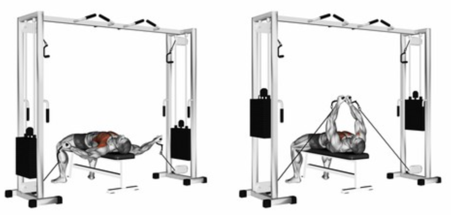

Flat Cable Fly
Setup
Stand between two cable pulleys set at chest level with a slight forward lean.
Grab the handles with a slight bend in your elbows and step forward to create tension on the cables.
Keep your feet staggered for balance and your core engaged.

Execution
Fly In:
Bring both arms forward and slightly downward in a hugging motion until your hands meet in front of your chest.
Squeeze:
Contract your chest muscles at the peak for 1–2 seconds.
Return:
Slowly open your arms back to the starting position with control.
Repeat for the desired number of reps.
Tips for Effectiveness
Control the Motion:
Avoid using momentum; focus on slow, controlled reps.
Elbow Position:
Maintain a slight bend in your elbows throughout the movement.
Breathing:
Exhale as you bring the handles together, and inhale on the return.
Benefits of Flat Cable Fly
Chest Isolation:
Specifically targets the pectoralis major without much shoulder involvement.
Constant Tension:
Cables keep tension on the muscles throughout the full range of motion.
Improves Definition:
Helps sculpt and define the chest area.
Do you want to change the language of this page?
English
Malayalam
Tamil
Hindi